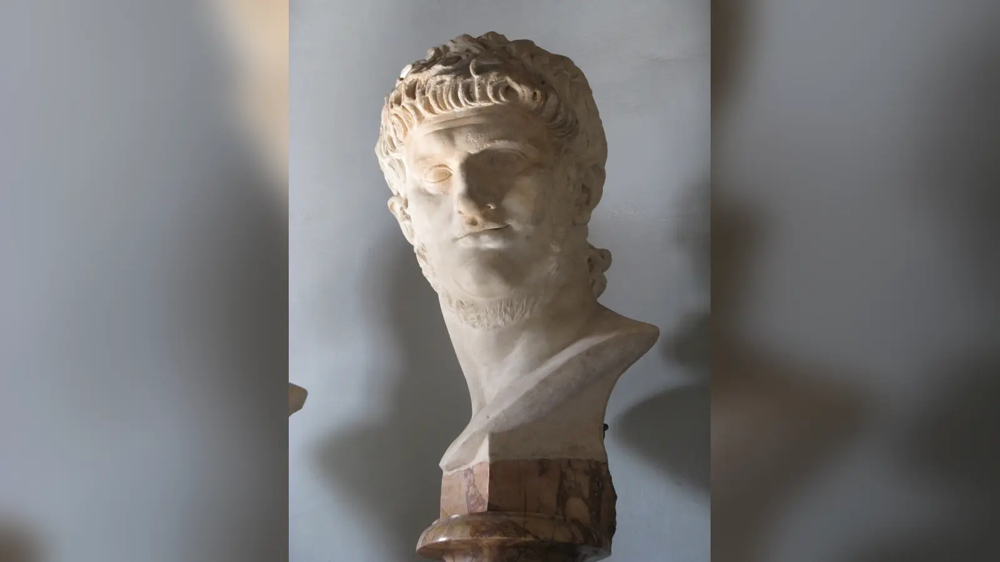
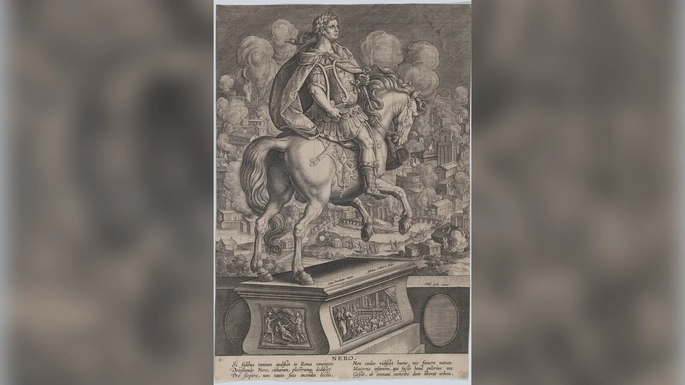
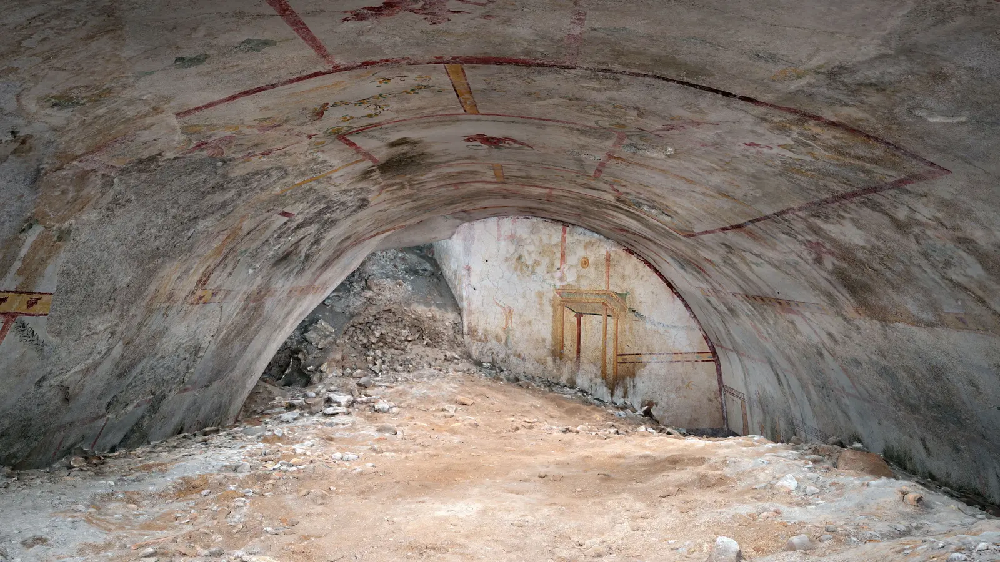

18 Temmuz’u 19 Temmuz’a bağlayan gece, MS 64 yazında Roma’nın Circus Maximus çevresindeki dükkânlarından birinde başlayan alevler kısa sürede kentin en büyük felaketlerinden birine dönüştü. Ahşap üst katlar, birbirine yaslanan yapılar, dar sokaklar ve yanıcı mallarla dolu dükkânlar ateşi besledi; yangın vadiler boyunca ilerleyip tepelerin eteklerine tırmanırken binlerce insan evlerini terk etmek zorunda kaldı. Büyük Roma Yangını yalnız binaları değil, tapınakları, anıtları ve kuşakların hafızasını taşıyan mahalleleri de yok etti. Felaketin ardından ise alevlerin kendisinden daha uzun ömürlü bir hikâye doğdu: Roma yanarken keman çalan Neron.
Peki Neron Roma’yı yaktı mı? Günümüze ulaşan kanıtlar, imparatorun Roma’yı yaktırmak için emir verdiğini kesin biçimde kanıtlamaz. Yangının nasıl başladığını bilmiyoruz ve en önemli antik anlatılardan Tacitus bile kazayla çıkmış bir felaket ile kasıtlı kundaklama söylentisi arasında kesin hüküm vermez. Üstelik onun aktarımına göre Neron yangın başladığında Roma’da değil Antium’daydı; daha sonra kente dönmüş, evsiz kalanlara alanlar açmış, yiyecek tedarikini kolaylaştırmış ve yeniden inşa için yeni kurallar getirmişti. Buna karşılık yangından sonra devasa Domus Aurea kompleksini yaptırması, felaketin sorumluluğunu Hristiyanlara yükleyerek ağır cezalar uygulaması ve zaten tartışmalı olan siyasi itibarı kuşkuları büyüttü. “Neron Roma’yı neden yaktı?” biçimindeki popüler arama bu nedenle sorunun cevabını baştan kabul eder. Tarihsel olarak önce sorulması gereken şey, Neron’un Roma’yı yakıp yakmadığı ve bunu gösterecek kanıtın gerçekten bulunup bulunmadığıdır.
MS 64 Büyük Roma Yangını Nasıl Başladı?
Büyük Roma Yangını’nın başlangıcına ilişkin en ayrıntılı anlatı Tacitus’un Annales eserinin XV. kitabında bulunur. Tacitus yangını 18 Temmuz’u 19 Temmuz’a bağlayan geceye yerleştirir ve ateşin Circus Maximus’un Palatinus ile Caelius tepelerine komşu bölümündeki dükkânlarda başladığını söyler. Bu alan yalnızca yarışların yapıldığı dev hipodromun çevresi değildi; dükkânlar, depolar ve ticari faaliyetlerle yoğun bir kentsel dokunun parçasıydı. Tacitus özellikle yanıcı malların bulunduğu dükkânlara dikkat çeker. Alevler burada tutunduğunda önlerinde yangını kesebilecek geniş taş konaklar veya çevresi duvarlarla ayrılmış büyük tapınak kompleksleri bulunmadığı için hızla ilerleyebildi.
Yangının ilk kıvılcımını neyin çıkardığı bilinmiyor. Modern anlatılarda bazen unutulmuş bir kandil, bir dükkân kazası veya kasıtlı kundaklama gibi tek bir neden kesinmiş gibi sunulur; oysa elimizde başlangıç anını gören ve güvenilir biçimde kaydedilmiş bir tanığın ifadesi yoktur. Anthony A. Barrett gibi modern araştırmacılar Roma’daki yangın riskini, arkeolojik izleri ve antik metinleri birlikte değerlendirerek kazara başlayan bir yangının felaket boyutuna ulaşmasının son derece mümkün olduğunu vurgular. Roma, MS 64’ten önce ve sonra da büyük yangınlar yaşamıştı. Kentte ateş gündelik hayatın parçasıydı: yemek pişirme, aydınlatma, ısınma ve çeşitli zanaatlar açık alev veya yüksek ısı gerektiriyordu. Yoğun yapılaşma içinde küçük bir kaza, uygun hava ve yapı koşullarında kontrol edilemez hâle gelebilirdi.
Tacitus’un anlatısında yangın önce Circus Maximus çevresindeki alçak kesimlerde ilerledi, ardından tepelerin eteklerine ve yoğun mahallelere yayıldı. Alevlerin hareketini yalnız “Roma ahşaptan yapılmıştı” cümlesiyle açıklamak da yetersizdir. Roma’da taş ve tuğla yapılar, anıtsal kamu binaları ve yangına daha dayanıklı kompleksler vardı; ancak sıradan konut dokusunda ahşap döşemeler, çatılar, merdivenler, kapılar ve üst katlar yaygındı. Dükkânlarda depolanan yağ, tekstil, odun ve başka yanıcı ürünler de yangının şiddetini artırabiliyordu. Kentin bazı bölgelerinde dar ve kıvrımlı sokaklar, bitişik yapıların alevi birbirine aktarmasını kolaylaştırıyordu.
Yangının başlangıç yeri Neron’un sorumluluğu tartışmasında önemlidir, fakat tek başına suç veya masumiyet kanıtı değildir. Circus Maximus çevresindeki ticari alanda başlayan yangın, gündelik bir kentsel kazayla uyumlu görünür; aynı zamanda kasıtlı bir ateşin de teorik olarak böyle bir yerde çıkarılması mümkündür. Sorun, iki ihtimal arasında seçim yapmamızı sağlayacak doğrudan delilin bulunmamasıdır. Tarihsel yöntem burada “hangisi daha dramatik?” sorusunu değil, “hangi iddia hangi kanıtla destekleniyor?” sorusunu öne çıkarır.
Yangın Roma’da Nasıl Bu Kadar Hızlı Yayıldı?
MS 64 Roma yangınının yıkıcılığını anlamak için imparatorun kişiliğinden önce kentin fiziksel yapısına bakmak gerekir. Roma, yüzyıllar boyunca plansız biçimde büyümüş mahallelerin, anıtsal merkezlerin, vadilerin ve tepelerin birbirine eklendiği çok yoğun bir metropoldü. İmparatorluk başkentinin nüfusunu kesin rakamla bilmiyoruz, ancak yüz binlerce insanın dar bir kentsel alanda yaşadığı açıktır. Çok katlı kiralık konutlar, yani insulae, özellikle sıradan halkın yoğunlaştığı bölgelerde önemliydi. Bu yapılarda yangının bir kattan diğerine sıçraması, dar sokaklarda karşı binalara ulaşması ve panik hâlindeki nüfusun tahliyesini zorlaştırması büyük riskti.
Tacitus yangının rüzgârla beslendiğini, düzlüklerde hızla ilerlediğini ve tepelerdeki engelleri aşarak yeniden aşağıya yayıldığını anlatır. İnsanların eşyalarını kurtarmaya çalışması, çocukları ve yaşlıları taşımak zorunda kalması, hangi yöne kaçacaklarını bilememesi felaketi daha da ağırlaştırdı. Modern itfaiye araçları, basınçlı hortum sistemleri veya merkezi acil durum koordinasyonu yoktu. Roma’da Augustus döneminden beri vigiles adı verilen yangın ve gece güvenliği teşkilatı bulunuyordu; ancak böyle büyük ve rüzgârla beslenen bir kent yangınını kontrol etmek, antik teknolojinin imkânlarını aşabiliyordu.
Yangın tek kesintisiz alev duvarı hâlinde dokuz gün sürmüş gibi anlatılmamalıdır. Tacitus’a göre ilk büyük yangın altı gün boyunca sürdü ve yedinci gün Esquiline bölgesinde, yapıların yıkılarak oluşturulduğu düşünülen bir açıklık sayesinde durduruldu. Ardından yangın yeniden başladı ve yaklaşık üç gün daha devam etti. İkinci yangının daha çok açık alanlar ve zengin konutların bulunduğu bölgelerde zarar verdiğini aktarır. Bu ikinci evre, kasıt söylentilerini güçlendiren unsurlardan biri oldu; çünkü ilk yangın söndükten sonra alevlerin yeniden ortaya çıkması halk için doğal olarak şüphe yaratıyordu. Fakat yeniden alevlenme büyük yangınlarda olağan dışı değildir ve tek başına organize kundaklama kanıtı sayılmaz.
Tacitus Roma’nın on dört idari bölgesinden yalnız dördünün büyük ölçüde zarar görmeden kaldığını, üçünün tamamen yıkıldığını ve diğer yedisinde yalnızca parçalanmış, yarı yanmış yapı kalıntılarının ayakta olduğunu söyler. Bu dağılım felaketin boyutunu açıkça gösterir, fakat “Roma’nın dörtte üçü tamamen kül oldu” gibi kolay oranlara çevrilmemelidir. “Ağır hasar görmüş bölge” ile “tamamen yok olmuş bölge” aynı şey değildir. Arkeoloji de yangının bazı alanlarda çok güçlü izler bıraktığını, başka bölgelerde ise hasarın daha sınırlı olduğunu gösterir. Kentin tamamı tek biçimde yanmadı.
Felaketin büyüklüğü, komplo olmadan açıklanamayacak kadar olağanüstü değildi. Roma’da MÖ 31, MÖ 23, MS 6 ve daha sonraki dönemlerde de büyük yangınlar yaşandı. Bu, MS 64 yangınının sıradan olduğu anlamına gelmez; kapsamı ve siyasi sonuçları onu benzersiz kıldı. Ancak kentin yapısal yangın riskini hesaba katmadan yalnız “böyle büyük bir yangını ancak imparator çıkarmış olabilir” düşüncesine yönelmek, neden ile sonuç arasına kanıtsız bir siyasi niyet yerleştirir.

Neron Yangın Başladığında Neredeydi?
Neron’un Roma yanarken sarayının balkonunda oturup alevleri seyrettiği görüntü, olayın en kalıcı sahnelerinden biridir. Tacitus’un anlatısı bununla uyuşmaz. Ona göre yangın başladığında Neron Roma’nın yaklaşık elli kilometre güneyindeki kıyı yerleşimi Antium’daydı. İmparator, yangın Palatinus’taki sarayına ve çevresine yaklaşana kadar Roma’ya dönmedi. Bu bilgi doğru kabul edildiğinde Neron’un yangının ilk saatlerinde kentte olmadığı sonucu çıkar.
Bu durum Neron’un yangını uzaktan emretmiş olmasını teorik olarak imkânsız kılmaz. Bir hükümdarın kundaklama emri vermesi için olay yerinde bulunması gerekmez. Dolayısıyla Antium bilgisi “Neron kesinlikle masumdu” biçiminde kullanılamaz. Fakat aynı bilgi, onun alevlerin karşısında sanat icra ettiği veya yangının başlamasını Roma’daki sarayından yönettiği popüler sahnelerle çelişir. Suçlama yapılacaksa bunun, Neron’un fiziksel olarak ateşi yaktığı veya başlangıcı yerinde seyrettiği anlatısından farklı bir iddia olması gerekir.
Tacitus’un Neron hakkında genellikle hayranlık dolu bir yazar olmadığı da önemlidir. Annales’in Neron bölümleri imparatorun yönetimindeki şiddeti, saray entrikalarını ve ahlaki bozulma olarak gördüğü davranışları sert biçimde anlatır. Buna rağmen yangın konusunda Antium bilgisini ve yardım önlemlerini kaydetmesi, bu ayrıntıların sırf Neron’u savunmak için modern dönemde icat edilmiş olmadığını gösterir. Aynı zamanda Tacitus yangın sırasında yaklaşık sekiz yaşında bir çocuktu; olayın yetişkin çağdaş gözlemcisi olarak yazmadı. Eserini yaklaşık yarım yüzyıl sonra kaleme alırken senato kayıtları, daha eski anlatılar ve sözlü gelenekler gibi bugün tümü elimizde olmayan kaynaklardan yararlanmış olabilir.
Bu nedenle “Neron neredeydi?” sorusu, yangın dosyasındaki az sayıdaki nispeten açık ayrımdan biridir: Tacitus onu başlangıç anında Antium’a yerleştirir. Suçluluk meselesi ise bu coğrafi bilgiden daha karmaşıktır.
Neron Yangın Sırasında Ne Yaptı?
Tacitus’un anlatısında Neron Roma’ya döndükten sonra yalnız sarayını kurtarmaya çalışmaz. Evsiz kalan halk için Campus Martius’u, Agrippa’nın kamu yapılarını ve kendi bahçelerini açtırır; geçici barınaklar kurdurur; Ostia’dan ve yakın kentlerden gıda getirilmesini sağlar ve tahıl fiyatını üç sestertius düzeyine indirir. Bu tedbirler, yüz binlerce insanın yaşadığı bir kentte barınma ve gıda krizinin yangın kadar tehlikeli hâle gelebileceğinin fark edildiğini gösterir.
Yardım önlemlerini Neron’un masumiyetinin kanıtı saymak doğru değildir. Bir yönetici felaketi kendi emriyle çıkarmış olsa bile siyasi tepkiyi azaltmak için yardım organize edebilir. Fakat aynı nedenle bu kayıtları görmezden gelip “Neron şehir yanarken hiçbir şey yapmadı” demek de tarihsel kaynakla uyuşmaz. Tacitus’un verdiği tablo daha rahatsız edici derecede karmaşıktır: Halkın nefret ettiği bir imparator, hakkında kundaklama söylentileri dolaşırken gerçek ve kapsamlı yardım tedbirleri de almış olabilir.
Tacitus’a göre bu önlemler bile söylentiyi durdurmadı. İnsanlar Neron’un yangın sırasında özel sahnesine çıkıp Troya’nın yıkılışını söylediğini konuşuyordu. Bu söylenti, yapılan yardımların siyasi etkisini zayıflattı. Felaket sırasında yöneticinin davranışının yalnız ne yaptığıyla değil, halkın onun niyetine ne kadar güvendiğiyle de değerlendirildiğini gösteren çarpıcı bir örnektir. Neron’un daha önceki davranışları, aristokrat çevrelerdeki itibarı ve sahne sanatlarına duyduğu sıra dışı ilgi, söylentinin inanılır bulunmasına zemin hazırladı.
Yangın sonrasında cesetlerin kaldırılması, molozların temizlenmesi, evsizlerin barındırılması ve kentin yeniden kurulması devasa bir lojistik süreç gerektiriyordu. Neron yönetimi yeniden inşayı teşvik etmek için belirli sürelerde bina yapanlara ödüller vaat etti ve molozların Tiber üzerinden Ostia bataklıklarına taşınmasını organize etti. Bu düzenlemeler daha sonraki “Neron yalnız yıkımı seyretti” imgesinin eksik olduğunu açıkça gösterir. Fakat yönetimin felakete müdahale etmiş olması, yangının ilk nedenine ilişkin soruyu tek başına çözmez.

Neron Roma Yanarken Gerçekten Keman mı Çaldı?
Hayır; Neron’un Roma yanarken keman çaldığı tarihsel olarak doğru olamaz. Modern anlamdaki keman, Roma İmparatorluğu döneminden yaklaşık bin yıl sonra gelişti. MS 1. yüzyılda Neron’un elinde bugün “violin” veya “fiddle” diye tanıdığımız çalgının bulunması anakronizmdir. Buna rağmen “Nero fiddled while Rome burned” sözü İngilizcede felaket karşısında önemsiz şeylerle uğraşan yönetici veya kişi için kullanılan güçlü bir deyime dönüştü ve tarihsel görüntüyü gerçek olaydan daha ünlü hâle getirdi.
Efsanenin antik çekirdeği tamamen yoktan çıkmış değildir. Tacitus, yangın sırasında Neron’un kendi sahnesinde Troya’nın yıkılışunu söylediğine dair bir söylentinin dolaştığını kaydeder. Bunu doğrulanmış bir olay olarak sunmaz. Suetonius ise çok daha suçlayıcıdır: Neron’un yangını Maecenas’ın kulesinden seyrettiğini, alevlerin güzelliğinden hoşlandığını ve sahne kıyafeti içinde Halosis Ilii, yani Troya’nın düşüşü/yıkılışı üzerine bir eser söylediğini aktarır. Cassius Dio da benzer dramatik geleneği sürdürür. Bu anlatılarda keman yoktur; Neron’un sanatçı kimliği ve Troya teması vardır.
Neron’un lir veya cithara çalması tarihsel kişiliğiyle uyumludur. İmparator müzik, şiir, tiyatro ve yarışmalara olağanüstü ilgi duyuyordu; halka açık performanslara çıkması Roma senatoryal elitinin bir bölümü tarafından makamına yakışmayan davranış olarak görülüyordu. Bu nedenle “şehir yanarken sanat yapan imparator” hikâyesi, dinleyicilerin Neron hakkında zaten bildiği bir özelliği felaketle birleştiriyordu. Hikâyenin etkili olması için tamamen imkânsız bir kişilik yaratmaya gerek yoktu; gerçek bir ilgi alanının ahlaki bir suçlama sahnesine dönüştürülmesi yeterliydi.
Daha sonraki ressamlar, romancılar, tiyatro yazarları ve sinemacılar bu sahneyi kendi çağlarının tanınabilir çalgılarıyla resmetti. Keman, Neron’un duyarsızlığını tek bakışta anlatan sembole dönüştü. Tarihsel olarak ise güvenle söyleyebileceğimiz şey daha sınırlıdır: Neron’un keman çalması imkânsızdır; Troya’nın yıkılışını söylediği iddiası antik kaynaklarda vardır, fakat Tacitus bunu söylenti olarak aktarır ve olay bağımsız biçimde doğrulanamaz.
Neron Neden Roma’yı Yakmakla Suçlandı?
Yangın büyüklüğündeki felaketler sorumlu arama eğilimini güçlendirir. MS 64’te de yalnız “ateş nereden çıktı?” değil, “bunu kim yaptı?” sorusu dolaşıma girdi. Tacitus, yangını söndürmeye çalışan insanların bazı kişiler tarafından engellendiğini, hatta bu kişilerin kendilerine bunu yapma yetkisi veren bir otorite bulunduğunu söylediklerini aktarır. Başka kişilerin de açıkça ateş attığını yazar. Bu ayrıntılar kasıt ihtimalini gündeme getirir, fakat kritik eksik şudur: Tacitus bu kişilerin Neron’dan emir aldığını kanıtlamaz.
Yangın sırasında binaların kasıtlı olarak yıkılması veya yakılması her durumda yangını büyütme amacı taşımaz. Antik ve modern yangınla mücadelede ateşin ilerlemesini kesmek için yapıların ortadan kaldırılması mümkündür. Tacitus ilk yangının Esquiline’de binaların yıkılmasıyla oluşturulan açıklık sayesinde durdurulduğunu söyler. Yağmacılar da kaostan yararlanmak için yangını veya tahliyeyi manipüle etmiş olabilir. Dolayısıyla “insanlar ateş yakarken görüldü” ile “imparator şehri yakmaları için adam gönderdi” arasında kanıtlanması gereken önemli bir zincir vardır.
Neron’un kişisel itibarı suçlamanın tutunmasını kolaylaştırdı. Roma aristokrat değerleri açısından bir princeps’in sahneye çıkması, yarışmalara katılması ve sanatçı gibi alkış araması aşağılayıcı bulunabiliyordu. Neron’un annesi Agrippina’nın öldürülmesiyle ilişkisi, siyasi infazlar ve saray içindeki şiddet zaten onun hakkında ağır bir ahlaki dosya oluşturmuştu. Böyle bir hükümdar hakkında “kendi şehrini sanatsal bir manzara uğruna yaktı” söylentisi, insanların önceden sahip olduğu imgeyle kolayca birleşti.
Bunun yanında şehir planlaması meselesi vardı. Suetonius, Neron’un eski Roma’nın çirkin binalarından ve dar, kıvrımlı sokaklarından hoşlanmadığı için kenti yaktığını doğrudan iddia eder. Bu, imparatorun yeni bir Roma kurmak için yangını planladığı anlatısının en açık antik biçimlerinden biridir. Ancak Suetonius olaydan onlarca yıl sonra yazan bir biyografi yazarıdır ve eserinde imparatorların karakterini skandal, söylenti, kişisel alışkanlık ve çarpıcı anekdotlarla anlatmayı sever. Onun verdiği bilgi değersiz değildir; fakat doğrudan mahkeme tutanağı gibi okunamaz.
Domus Aurea: Neron Yangından Kazanç mı Sağladı?
Yangından sonra Neron’un yaptırdığı Domus Aurea, suçlama tarihinin belki de en güçlü görsel kanıtı hâline geldi. “Altın Ev” olarak bilinen bu devasa saray ve peyzaj kompleksi Palatinus, Esquiline ve çevresindeki geniş alanlara yayıldı. Gösterişli salonlar, duvar resimleri, mermer ve değerli kaplamalar, bahçeler, pavyonlar ve yapay göl imparatorun merkezî Roma’da daha önce görülmemiş ölçekte bir saray çevresi kurmasına imkân verdi. Daha sonra Flavius Amfitiyatrosu’nun, yani bugün Kolezyum dediğimiz yapının inşa edildiği vadi de bu kompleksin yapay gölüyle ilişkiliydi; Kolezyum MS 64 yangını sırasında henüz mevcut değildi.
Yangın geniş alanları boşaltmışken imparatorun kısa süre sonra bu arazilerin bir bölümünü saray kompleksine katması, “yangından kim kazandı?” sorusunu Neron’a yöneltti. Suetonius’un anlatısında bu ilişki doğrudan suçlama hâline gelir: Neron’un istediği alanı elde etmek için yangını çıkardığı söylenir. Halk açısından da saray inşaatının görüntüsü son derece kötü olmalıydı. Evlerini kaybeden Romalıların karşısında imparatorun dev bir özel kompleks kurması, yardım önlemlerinin yarattığı olumlu etkiyi kolayca gölgeleyebilirdi.
Fakat sonradan ortaya çıkan fırsattan yararlanmak ile o fırsatı yaratmak için felaketi planlamak aynı iddia değildir. Domus Aurea, Neron’un yangından sonra geniş arazi kullandığını kanıtlar; yangını onun başlattığını kanıtlamaz. Bir suç isnadında motivasyon olasılığı ile eylemi bağlayan delil birbirinden ayrılmalıdır. Neron’un yeni saray projesi, kundaklama için varsayılan bir amaç sunar; fakat emir, plan, fail veya çağdaş belge sağlamaz.
Domus Aurea’nın inşası aynı zamanda Neron’un mimari ve estetik tutkularının parçasıydı. Severus ve Celer gibi mimarlarla ilişkilendirilen kompleks, beton tonozlama ve mekânsal tasarım açısından Roma mimarisinin yenilikçi örneklerinden biri hâline geldi. İmparatorun bu ölçekte bir saray istemesi siyasi eleştiriye açıktı; fakat mimari ihtişamı otomatik olarak yangın komplosunun maddi deliline dönüştürmek tarihsel nedenselliği tersine çevirir.
Neron’un ölümünden sonra Flavius hanedanı Domus Aurea’nın bazı alanlarını kamusal kullanıma dönüştürdü. Vespasianus yapay göl alanında Flavius Amfitiyatrosu’nun inşasını başlattı; Titus hamamları ve daha sonraki yapılar saray peyzajını değiştirdi. Böylece “özel imparatorluk lüksünden halka geri verilen alan” düşüncesi Flavius meşruiyetinin parçası oldu. Bu dönüşüm, Neron’un sarayının sonraki siyasi hafızada neden özellikle olumsuz bir sembole dönüştüğünü de açıklar.

Hristiyanlar Büyük Roma Yangınıyla Neden Suçlandı?
Tacitus’un Annales XV.44 bölümü, Büyük Roma Yangını’nın sonuçlarını yalnız Roma tarihi değil erken Hristiyanlık tarihi açısından da önemli kılar. Tacitus’a göre Neron, yangını kendisinin çıkarttırdığı yönündeki söylentiyi ortadan kaldırmak için halk arasında “Hristiyanlar” adıyla bilinen grubu suçladı ve ağır cezalara çarptırdı. Önce bu kimliği kabul edenler tutuklandı; ardından onların ifadeleriyle daha fazla kişi yakalandı. Tacitus suçlamanın yalnız yangın çıkarmaktan ziyade “insanlığa karşı nefret” gibi daha geniş bir düşmanlık çerçevesine kaydığını aktarır.
Cezalar son derece ağırdı. Tacitus bazı mahkûmların hayvan postlarına sarılıp köpekler tarafından parçalandığını, bazılarının çarmıha gerildiğini, bazılarının ise gece aydınlatması için yakıldığını yazar. Neron’un kendi bahçelerini gösteri için açtığını ve halkın arasına yarışçı kıyafetiyle karıştığını da ekler. Bu ayrıntılar daha sonraki Hristiyan şehitlik hafızasında Neron’un özel bir kötülük figürüne dönüşmesine güçlü katkı yaptı.
Tacitus’un kendisi Hristiyanlara sempatiyle yaklaşmaz. İnançlarını “zararlı batıl inanç” olarak nitelendirir ve grubun Roma’daki varlığını olumsuz bir dille anlatır. Buna rağmen cezaların kamu yararından çok tek bir kişinin acımasızlığı için uygulandığı düşüncesinin halkta merhamet uyandırdığını söyler. Bu, metnin önemli nüansıdır: Tacitus hem Hristiyanlara düşmanca bir dil kullanabilir hem de Neron’un cezalandırma biçimini aşırı bulabilir.
Hristiyanların yangını gerçekten çıkardığına dair güvenilir bağımsız kanıt yoktur. “Neron Hristiyanları suçladı” tarihsel bir iddiadır; “Hristiyanlar Roma’yı yaktı” ise aynı şey değildir. Neron’un neden özellikle bu grubu seçtiği konusunda kesin belge bulunmaz. Küçük, toplumun çoğunluğundan ayrışan ve zaten kuşkuyla karşılanan bir dini grubun günah keçisi hâline getirilmesi siyasi açıdan kullanışlı olmuş olabilir. Tacitus’un anlatısı, imparatorun kendi üzerindeki söylentiyi yönlendirme amacı taşıdığını açık biçimde ima eder.
Daha sonraki Hristiyan gelenekleri Neron’u Petrus ve Pavlus’un ölümleriyle, ilk büyük Roma zulmüyle ve kıyametçi kötülük imgeleriyle ilişkilendirdi. Bu geleneklerin tarihsel katmanları birbirinden ayrılmalıdır. Petrus ve Pavlus’un Roma’daki ölümlerine ilişkin sonraki Hristiyan hafızası önemlidir, ancak MS 64 yangınının failini belirleyen çağdaş adli kayıt değildir. Neron’un Hristiyanları cezalandırdığı anlatısı ile daha sonraki teolojik Neron imgesi zamanla birbirini güçlendirdi.
Tacitus Büyük Roma Yangını Hakkında Ne Yazdı?
Tacitus, yangın konusunda günümüze ulaşan en ayrıntılı ve modern araştırmalarda en çok ağırlık verilen antik anlatıyı sunar. Bunun nedeni onun Neron’u sevmesi veya tamamen tarafsız olması değildir. Tacitus senatoryal bakış açısına sahip bir tarihçiydi ve Annales boyunca imparatorluk iktidarının özgürlük, senato ve aristokrat davranış üzerindeki etkisini sorguladı. Neron’un yönetiminin karanlık yönlerini anlatmaktan kaçınmaz. Tam da bu nedenle yangın konusunda kullandığı ihtiyatlı dil önem taşır.
Yangının başlangıcında Tacitus felaketin tesadüfen mi yoksa imparatorun kötülüğü nedeniyle mi gerçekleştiğinin belirsiz olduğunu söyler. Bu formül, iki açıklamanın da dolaşımda olduğunu gösterir. Daha sonra Neron’un Antium’da bulunduğunu, Roma’ya döndüğünü ve yardım önlemleri aldığını aktarır. Ardından bütün bu önlemlerin, Neron’un Troya’nın yıkılışını söylediğine ilişkin söylentiyi bastıramadığını belirtir. Metin böylece yardım faaliyeti ile suçlama söylentisini aynı anlatıda yan yana tutar.
Tacitus ayrıca ikinci yangının Tigellinus’a ait arazide başlamasının kuşkuyu artırdığını ve Neron’un yeni bir kent kurma arzusu bulunduğuna ilişkin söylentilerin yayıldığını aktarır. Fakat söylenti ile kendi hükmünü aynı şey yapmaz. Hristiyanların cezalandırılması bölümünde de Neron’un üzerindeki kötü şöhreti başka yöne çevirmeye çalıştığı izlenimini verir. Bu, Tacitus’un Neron’u tamamen temize çıkardığı anlamına gelmez; aksine imparatora karşı ciddi kuşku taşıyan bir metindir. Yine de “Neron kesin olarak emir verdi” sonucunu açık tarihsel hüküm olarak yazmaz.
Tacitus’un sınırlılıkları da vardır. MS 56 veya 57 civarında doğduğu kabul edildiğinden yangın sırasında çocuktu. Annales’in ilgili kitaplarını olaydan yaklaşık yarım yüzyıl sonra yazdı. Hangi kaynakları kullandığını her ayrıntıda bilmiyoruz ve Annales’in bazı bölümleri günümüze eksik ulaşmıştır. Buna rağmen senato çevresine erişimi, tarih yazım yöntemi ve farklı rivayetleri zaman zaman ayırması onu vazgeçilmez yapar. “En önemli kaynak” ile “hatasız tanık” aynı şey değildir.
Suetonius ve Cassius Dio Neron’u Nasıl Suçladı?
Suetonius’un Nero’nun Yaşamı eseri Tacitus’tan daha doğrudandır. Ona göre Neron eski yapıların çirkinliğinden ve dar sokaklardan hoşlanmadığı için Roma’yı ateşe verdi. İmparatorun görevlilerinin yanıcı malzemelerle yakalandığını, bazı taş yapıların savaş makineleriyle yıkılıp ardından ateşe verildiğini ve Neron’un yangını bir kuleden izleyerek Troya’nın yıkılışını söylediğini aktarır. Bu anlatıda belirsizlik büyük ölçüde ortadan kalkmış, yangın Neron’un karakter suçlarının arasına yerleştirilmiştir.
Suetonius’un verdiği ayrıntıları sırf sansasyonel oldukları için reddetmek doğru değildir. İmparatorluk arşivlerine erişmiş olabilir, saray çevresine ilişkin bugün kayıp kaynaklar kullanmış olabilir ve bazı bilgiler başka kanıtlarla doğrulanabilir. Ancak On İki Caesar’ın Yaşamı modern anlamda kronolojik siyasi tarih değildir. Suetonius imparatorların erdemlerini, kusurlarını, cinsel yaşamlarını, alışkanlıklarını, fiziksel özelliklerini, uğurları ve skandalları tematik kümeler hâlinde aktarır. Neron’un yangını da “halka ve vatana karşı acımasızlık” portresinin içinde yer alır. Bu edebî düzen, anlatının nasıl değerlendirileceğini etkiler.
Cassius Dio daha da geç bir kaynaktır. MS 2. yüzyıl sonu ile 3. yüzyıl başında yazan senatör tarihçi, yangından yaklaşık bir buçuk yüzyıl sonra yaşamıştır. Günümüze ilgili kısmın önemli bölümü Bizans dönemi özetleri üzerinden ulaşır. Dio’nun anlatısında Neron kenti yok etme arzusuyla adamlar göndererek yangını çıkartır; insanlar farklı yerlerde ateşlerin başlaması karşısında şaşkına döner ve imparator felaketi sanatsal bir gösteriye dönüştürür. Bu, Neron karşıtı geleneğin en dramatik biçimlerinden biridir.
Dio’nun geç tarihte yazması onun hiçbir değer taşımadığı anlamına gelmez. Roma senatörü olarak geniş tarihsel malzemeye erişmişti ve bugün kayıp daha erken eserlerden yararlanmış olabilir. Fakat hangi ayrıntının hangi kaynaktan geldiğini çoğu zaman belirleyemiyoruz. Üstelik kötü imparatorların aşırılıklarını dramatik sahnelerle anlatmak Roma tarih yazımında tanıdık bir yöntemdir. Neron’un annesini öldürmesi gibi başka kanıtlarla güçlü biçimde desteklenen eylemlerinin bulunması, yangınla ilgili her suçlamayı otomatik olarak doğru yapmaz.
Üç yazarın farkı bu yüzden önemlidir. Tacitus belirsizlik ve söylentiyi korur; Suetonius doğrudan kundaklama suçlaması yapar; Dio bu suçlayıcı geleneği daha geç ve dramatik biçimde aktarır. Tarihçi bunlardan birini “seçip” diğerlerini atmak yerine, her anlatının ne zaman, hangi türde ve hangi bilgi zinciri içinde yazıldığını değerlendirmek zorundadır.
Antik Kaynaklara Ne Kadar Güvenebiliriz?
Antik Roma tarihi çoğu zaman ideal koşullarda yazılmaz. MS 64 yangınına ilişkin elimizde güvenlik kamerası, itfaiye raporu, adli inceleme veya çağdaş gazete arşivi yoktur. Tacitus, Suetonius ve Cassius Dio’nun metinleri olayın anlaşılması için vazgeçilmezdir, fakat üçü de yangın anını yetişkin görgü tanığı olarak kaydetmemiştir. Tacitus çocuktu; Suetonius olaydan sonra doğdu; Dio ise çok daha sonraki kuşağa aitti. Hepsi daha erken belgelerden ve anlatılardan yararlanmış olabilir, ancak bu malzemenin büyük kısmı kaybolduğu için kaynak zincirini her ayrıntıda yeniden kuramayız.
Roma tarih yazımında tiran hükümdarların belirli ahlaki kalıplarla anlatılması yaygındı. Aşırı lüks, cinsel taşkınlık, tanrılara saygısızlık, aristokratlara zulüm, sahne tutkusu ve felaketlerden zevk alma gibi motifler kötü hükümdar portresini güçlendirebilirdi. Neron bu kalıpların birçoğuna son derece uygun bir figüre dönüştü. Bu, bütün suçlamaların uydurma olduğu anlamına gelmez. Neron döneminde gerçek siyasi şiddet, infazlar ve saray içi cinayetler vardı. Kaynak eleştirisinin amacı imparatoru “rehabilite etmek” değil, her iddiayı kendi kanıt düzeyinde tutmaktır.
Aynı şekilde antik yazarların senatoryal kökenleri onların halk arasında hiçbir bilgiye sahip olmadığı veya her şeyi siyasi propaganda için uydurduğu anlamına gelmez. Tacitus gibi bir tarihçi farklı rivayetleri karşılaştırabilir, resmi kayıtları kullanabilir ve kendisine ulaşan söylentileri işaretleyebilir. Suetonius’un anekdotları, doğru kullanıldığında saray kültürü ve imparatorluk imgesi hakkında çok değerlidir. Dio’nun geç anlatısı da daha eski kayıp gelenekleri koruyabilir. Sorun “güvenilir/güvenilmez” biçiminde tek puan vermek değil, belirli bir iddianın hangi bağımsız desteklere sahip olduğunu sormaktır.
Yangının başlangıcında bu destek zayıftır. Neron’un emir verdiğini gösteren çağdaş bir yazıt, mektup, senato kararı veya fail itirafı yoktur. Buna karşılık yangının gerçekliği, yıkımın genişliği ve sonrasındaki yeniden yapılanma edebî metinlerin dışındaki maddi kanıtlarla da görülebilir. Tarihçinin kesinlik derecesi tam burada değişir.
Arkeolojik Kanıtlar Yangın Hakkında Ne Gösteriyor?
Arkeoloji MS 64 felaketinin yalnız edebî bir hikâye olmadığını açıkça gösterir. Roma’nın çeşitli kazı alanlarında 1. yüzyıl ortasına tarihlenen yangın ve yıkım izleri, ardından gelen yeniden inşa evreleri saptanmıştır. Palatinus, Forum çevresi, Circus Maximus’a yakın bölgeler ve daha sonra Domus Aurea’nın yayıldığı alanlardaki yapı değişimleri, yazılı kaynakların anlattığı büyük kentsel kırılmayla uyumludur. Anthony Barrett’ın Rome Is Burning çalışmasının önemli yönlerinden biri de yangının maddi izlerini edebî anlatılarla birlikte değerlendirmesidir.
Arkeolojik tabakalar bize bir yapının yandığını, hangi evrenin ardından yeniden inşa edildiğini ve bazen yangının ne kadar şiddetli olduğunu gösterebilir. Seramikler, sikkeler, yapı teknikleri ve stratigrafi tarihlendirmeye yardımcı olur. Yeni duvarların eski yangın tabakasının üzerine oturması, bir mahallenin felaket sonrasında yeniden düzenlendiğini gösterebilir. Domus Aurea’nın mimari kalıntıları da Neron’un yangın sonrasında merkezî Roma’da dev bir saray projesi gerçekleştirdiğini tartışmasız biçimde ortaya koyar.
Fakat yanmış bir tabaka failin adını taşımaz. Arkeoloji ateşin kasıtlı mı kazara mı çıkarıldığını çoğu durumda belirleyemez; hele imparatorun emir verip vermediğini tek başına gösteremez. Bir yapının MS 64’te yandığını saptamak, Neron’un onu yaktırdığını kanıtlamaz. Aynı şekilde Domus Aurea’nın yangından sonra inşa edildiğini göstermek, sarayın yangın öncesinde planlanıp planlanmadığı veya yangının onun için çıkarılıp çıkarılmadığı sorusunu tek başına çözmez.
Sikkeler ve yazıtlar da farklı bir pencere açar. Neron’un sikke programları, mimari projeleri ve imparatorluk mesajları rejimin kendisini nasıl sunduğunu anlamaya yardımcı olur; fakat propaganda niteliği taşıyan resmî imge ile edebî düşmanlık arasında doğrudan “biri doğru, diğeri yanlış” seçimi yapılamaz. Maddi kültür, hükümdarın kamusal temsilini; tarihçiler ise çatışmaları ve söylentileri gösterebilir. İkisini birlikte okumak, tek kaynağa bağımlılığı azaltır.
Büyük Yangından Sonra Roma Nasıl Yeniden İnşa Edildi?
Yangından sonra Roma’nın yeniden inşası, Neron döneminin en somut idari sonuçlarından biriydi. Tacitus, yeni mahallelerin önceki Galya yangınından sonraki gibi gelişigüzel değil, ölçülmüş sokak çizgileri ve daha geniş yollarla kurulduğunu anlatır. Bina yüksekliklerine sınırlama getirildi, yapıların arasında açık alan bırakıldı ve apartman bloklarının önüne portikolar eklendi. Neron bu portikoların bir bölümünü kendi hesabından yaptırmayı ve temizlenmiş arsaları sahiplerine teslim etmeyi vaat etti.
Yapı malzemesine de müdahale edildi. Binaların belirli bölümlerinde Gabii veya Alba yöresinden yangına daha dayanıklı taş kullanılması istendi; ahşap kullanımının kritik yerlerde azaltılması amaçlandı. Ortak duvarlar yerine binaların kendi duvarlarıyla ayrılması, yangının bir yapıdan diğerine geçişini sınırlamaya yönelikti. Su kaynaklarının özel kişiler tarafından yönlendirilmesini engellemek için denetim artırıldı ve yangın söndürme araçlarının erişilebilir tutulması istendi. Bu düzenlemeler modern yangın yönetmeliğinin birebir karşılığı değildi, fakat antik bir metropolün felaketten sonra risk azaltmaya yönelik planlı müdahalesiydi.
Molozların kaldırılması da sistemli hâle getirildi. Ostia’dan tahıl taşıyarak Tiber üzerinden Roma’ya gelen gemilerin dönüşte boş gitmek yerine yıkıntı malzemesini taşıması planlandı. Belirli süre içinde yeniden inşa yapan mülk sahiplerine teşvikler verildi. Böylece yardım aşamasından uzun vadeli yeniden yapılanmaya geçildi. Kentin daha geniş sokakları ve açık alanları bazı Romalılar tarafından daha sağlıklı ve güzel bulunurken, Tacitus eski dar sokakların gölge sağladığını düşünenlerin yeni düzeni sıcak bulduğunu da kaydeder. Yeniden inşa bile tek sesli bir başarı hikâyesi değildi.
Bu reformların Neron’un suçsuzluğunu kanıtladığını söylemek mümkün değildir. Kundaklama emri vermiş bir hükümdar da daha sonra istediği yeni kenti kurmak için düzenleme yapabilirdi. Fakat aynı reformlar “Neron Roma’yı yaktı çünkü yeniden planlamak istiyordu” iddiasına da otomatik kanıt sağlamaz. Yeniden inşa, büyük bir felaketin ardından her yönetimin karşılaşacağı zorunlu görevdi. Tarihsel önemi, yangının Roma mimarisi ve şehir planlaması üzerinde kalıcı sonuçlar doğurmuş olmasıdır.
Neron’un Kötü Şöhreti Nasıl Oluştu?
Neron’un yangınla özdeşleşmesi tek bir gecede oluşmadı. İmparatorun MS 68’de ölümü Julio-Claudius hanedanını sona erdirdi ve ardından iç savaş yılı geldi. Flavius hanedanı yeni bir siyasi başlangıç kurarken Neron’un aşırılıkları, özel lüksü ve başarısız yönetimi karşılaştırma malzemesi hâline geldi. Domus Aurea’nın bazı bölümlerinin kamusal yapılara dönüştürülmesi bu karşılaştırmanın mimari ifadesiydi. Vespasianus’un yapay göl alanında başlattığı Flavius Amfitiyatrosu, imparatorluk alanının halka gösteri mekânı olarak “geri verilmesi” şeklinde okunabildi.
Neron’un senatoryal aristokrasiyle çatışması da hafızasını şekillendirdi. Sahneye çıkması, şarkı söylemesi ve yarışmalara katılması modern okura zararsız bir sanat tutkusu gibi görünebilir; Roma elit kültüründe ise bir imparatorun profesyonel performansçı rolüne girmesi statü sınırlarını ihlal ediyordu. Buna annesi Agrippina’nın öldürülmesi, Britannicus’un ölümü, Pisonian komplo sonrasındaki infazlar ve Poppaea’nın ölümü etrafındaki ağır anlatılar eklendi. Bazı suçlamaların ayrıntıları tartışmalı olsa da Neron yönetimindeki siyasi şiddet bütünüyle edebî icat değildir.
Hristiyan geleneği başka bir hafıza hattı oluşturdu. Yangın sonrasında Hristiyanlara uygulanan cezalar, Neron’u zulmün sembolü hâline getirdi. Petrus ve Pavlus’un Roma’daki şehitliğiyle ilgili gelenekler ve sonraki kıyametçi yorumlar imparatorun adını dini kötülükle ilişkilendirdi. Böylece senatoryal tarih yazımının kötü hükümdarı ile Hristiyan hafızasının zalim takipçisi aynı figürde birleşti.
Bu süreç “Neron hakkındaki her şey propaganda” sonucuna götürmemelidir. Bir hükümdarın kötü şöhreti siyasi rakipleri tarafından büyütülebilir ve aynı hükümdar gerçekten ağır suçlar işlemiş olabilir. Neron’un yangını çıkarttırdığı iddiasının kanıtı zayıf diye annesinin ölümündeki sorumluluğu, siyasi infazları veya Hristiyanlara yönelik cezaları aklamak gerekmez. Tarihsel revizyon, eski siyah portreyi beyaza boyamak değil, farklı iddiaları farklı kanıtlarla değerlendirmektir.
Modern Tarihçiler Neron’un Roma’yı Yaktığını Düşünüyor mu?
Modern araştırmalarda doğrudan kundaklama suçlamasına önceki popüler anlatılardan daha ihtiyatlı yaklaşılır. Miriam Griffin, Edward Champlin, John F. Drinkwater ve özellikle Büyük Yangın üzerine kapsamlı bir çalışma yayımlayan Anthony A. Barrett gibi araştırmacılar Neron’un saltanatını antik ahlaki portrelerin ötesinde, siyasi, arkeolojik ve toplumsal bağlam içinde ele alırlar. Bu çalışmaların hepsi her konuda aynı sonuca ulaşmaz; ancak “Neron Roma’yı yaktı ve bunu kesin biliyoruz” biçimindeki basit anlatı modern akademik yöntemin taşıyabileceğinden daha güçlü bir iddiadır.
Yangının kazara çıkmış olması güçlü bir olasılıktır çünkü Roma zaten yüksek yangın riski taşıyan bir kentti ve felaketi açıklamak için özel bir imparatorluk komplosu varsaymak zorunlu değildir. Başlangıç noktası olan ticari bölge, yanıcı malzemeler, yoğun yapılaşma ve rüzgâr büyük yangının doğal koşullarını sağlayabilir. Neron’un Antium’da bulunması, daha sonra yardım tedbirleri alması ve yeniden inşa düzenlemeleri yapması da “imparator alevlerin başında keyifle duran kundakçıydı” imgesini zayıflatır.
Bununla birlikte “modern tarihçiler Neron’un masum olduğunu kanıtladı” demek de hatalıdır. Yangının ilk nedenini bilmiyoruz. Tacitus’un söndürmeyi engelleyen kişiler hakkındaki kaydı ve ikinci yangınla ilgili kuşkular, antik dönemde kasıt söylentisinin neden ciddiye alındığını gösterir. Neron’un uzaktan emir vermesi teorik olarak mümkündür ve kayıp belgeler nedeniyle bugün bilemediğimiz bilgiler bulunabilir. Tarihsel olasılık ile kanıtlanmış olay arasındaki çizgi burada korunmalıdır.
Domus Aurea da modern tartışmada önemli fakat dolaylı bir veridir. Neron yangından sonra felaketin açtığı alanı saray projesi için kullandı. Bu durum siyasi açıdan felaketti ve suçlama için güçlü bir motif yarattı. Fakat modern bir soruşturma mantığıyla bakıldığında “çıkar sağladı” ifadesi, “yangını çıkarttırdı” sonucunu tek başına vermez. Arada emir, planlama veya fail bağlantısını gösteren kanıt gerekir.
Neron ve Hristiyanlar meselesi de benzer biçimde ayrılmalıdır. Tacitus’un anlatısı Neron’un yangın suçlamasını başka bir gruba yönelttiğini gösterir ve bu davranış, imparatorun kendi üzerindeki kuşkudan rahatsız olduğunu düşündürür. Fakat bir hükümdarın günah keçisi araması, onun asıl suçlu olduğunu otomatik olarak kanıtlamaz. Siyasi panik, kamuoyu yönetimi ve toplumdaki marjinal gruplara yönelik önyargı da aynı davranışı açıklayabilir.
Modern tarihçiliğin en güçlü katkısı bu nedenle yeni bir “kesin Neron” yaratmak değil, soruyu yeniden kurmaktır. Yangının çıkış nedeni, Neron’un kriz yönetimi, saray inşası, Hristiyanların cezalandırılması ve imparatorun sonraki hafızası birbirine bağlıdır; fakat biri diğerinin otomatik kanıtı değildir. Her başlık kendi delilleriyle değerlendirilmelidir.
Sonuç: Neron Roma’yı Gerçekten Yaktı mı?
Neron Roma’yı gerçekten yaktı mı sorusunun tarihsel cevabı, iki bin yıldır tekrarlanan popüler görüntüden daha sınırlı fakat daha sağlamdır: Neron’un Roma’yı yakma emri verdiği kanıtlanmış değildir. MS 64 Büyük Roma Yangını’nın ilk kıvılcımının nasıl çıktığını bilmiyoruz. Tacitus, yangının kaza mı yoksa imparatorun emriyle mi başladığını kesinleştirmez; Neron’un başlangıç sırasında Antium’da olduğunu, Roma’ya dönerek barınma ve gıda yardımları düzenlediğini ve sonrasında yeni yapı kuralları getirdiğini aktarır. Bu bilgiler imparatoru hukuken “aklayan” belgeler değildir, fakat popüler kundakçı portresinin bazı temel sahneleriyle açıkça çelişir.
Suetonius ve Cassius Dio çok daha suçlayıcı anlatılar bırakmıştır. Bunları görmezden gelmek doğru olmaz; Neron’un yangını çıkarttırdığı düşüncesinin antik dönemde güçlü ve uzun ömürlü olduğunu gösterirler. Fakat ikisi de olaya tanık değildir ve özellikle Dio çok daha geç tarihte yazmıştır. Suetonius’un biyografik skandal düzeni, Dio’nun dramatik tarih anlatısı ve Tacitus’un söylenti ile olguyu ayırmaya çalışan yaklaşımı aynı kanıt değeriyle okunamaz. Üçü birlikte incelendiğinde suçlamanın varlığı kesindir; suçlamanın doğruluğu ise kesinleşmez.
Domus Aurea kuşkuyu anlaşılır kılar. Neron felaketten sonra merkezî Roma’da devasa bir saray alanı oluşturdu ve böylece yangından maddi-mekânsal kazanç sağlamış gibi göründü. Ancak bir felaketin açtığı fırsatı kullanmak, felaketi önceden planlamakla aynı şey değildir. Hristiyanların suçlanıp ağır biçimde cezalandırılması da Neron yönetiminin karanlık bir gerçeğidir; fakat bu, Hristiyanların yangını çıkardığını kanıtlamadığı gibi Neron’un kundaklama emrini de tek başına kanıtlamaz.
“Keman çalan Neron” ise tarihsel olaydan çok sonraki kültürel hafızanın ürünüdür. Keman henüz yoktu ve Tacitus’un kaydettiği Troya şarkısı bile doğrulanmış olay değil, yangın sırasında dolaşan söylentiydi. Yine de bu sahnenin iki bin yıl yaşayabilmesi tesadüf değildir: sanatçı imparator, yanan başkent, Altın Ev ve zulme uğrayan Hristiyanlar birbirine eklenerek olağanüstü güçlü bir kötü hükümdar hikâyesi oluşturdu.
Eldeki kanıtların ağırlığı, yangının kaza sonucu başlamış olmasını ciddi ve güçlü bir olasılık hâline getirir; Neron’un kundaklama emri verdiğini doğrulayacak doğrudan delil ise yoktur. Fakat yangının gerçek nedeni bilinmediği için “Neron’un masumiyeti kanıtlandı” demek de kanıtın ötesine geçer. Büyük Roma Yangını’nın en kalıcı dersi, Neron’un alevleri başlatıp başlatmadığından çok, bir felaketin ardından söylenti, siyasi itibar, gerçek yönetim şiddeti ve sonraki kuşakların anlatılarının nasıl tek bir unutulmaz görüntüde birleşebildiğidir.
Sık Sorulan Sorular
Neron Roma’yı gerçekten yaktı mı?
Neron’un MS 64’te Roma’yı yaktırmak için emir verdiğini kanıtlayan doğrudan ve kesin bir delil yoktur. En önemli antik kaynaklardan Tacitus yangının kaza sonucu mu yoksa imparatorun emriyle mi çıktığını kesinleştirmez. Neron’un yangın başladığında Antium’da olduğunu ve daha sonra Roma’ya dönerek yardım tedbirleri aldığını da aktarır. Suetonius ve Cassius Dio ise Neron’u çok daha doğrudan suçlar, fakat ikisi de olaya tanık değildir ve özellikle Dio olaydan çok sonra yazmıştır. Modern tarihçiler bu nedenle kundaklama suçlamasına ihtiyatla yaklaşır. Kazara başlayan bir yangın güçlü bir olasılıktır; ancak yangının ilk nedeni kesin olarak bilinmediğinden Neron’un masumiyetinin de mutlak biçimde kanıtlandığı söylenemez.
Büyük Roma Yangını ne zaman başladı?
Büyük Roma Yangını MS 64 yılının 18 Temmuz’unu 19 Temmuz’a bağlayan gece başladı. Tacitus başlangıç noktasını Circus Maximus’un Palatinus ve Caelius tepelerine komşu tarafındaki dükkânların bulunduğu bölgeye yerleştirir. Bu alan yanıcı malların depolandığı ticari bir çevreydi ve yoğun yapılaşma yangının hızla yayılmasına elverişliydi. Yangının ilk kıvılcımını neyin çıkardığı bilinmiyor. Antik kaynaklarda Neron’un sorumluluğuna ilişkin suçlamalar bulunsa da başlangıç anını doğrudan açıklayan güvenilir bir görgü tanığı kaydı günümüze ulaşmamıştır. Bu nedenle tarihçiler tarihi ve genel başlangıç bölgesini belirleyebilse de yangının kaza, ihmal veya kasıt sonucu başladığını kesin biçimde söyleyemez.
Büyük Roma Yangını kaç gün sürdü?
Tacitus’un anlatısına göre ilk büyük yangın yaklaşık altı gün sürdü ve ardından kontrol altına alındı. Fakat kısa süre sonra yangın yeniden başladı ve ikinci evre yaklaşık üç gün devam etti. Bu nedenle “Roma yangını kaç gün sürdü?” sorusuna genellikle toplamda yaklaşık dokuz gün şeklinde cevap verilir; ancak bunun kesintisiz tek yangın evresi olmadığı belirtilmelidir. İlk ve ikinci alevlenme arasında bir ayrım vardır. İkinci yangının ortaya çıkması antik dönemde kasıt söylentilerini artırdı, fakat yeniden alevlenme tek başına kundaklama kanıtı değildir. Büyük kent yangınlarında sıcak enkaz, rüzgâr ve kontrol edilemeyen odaklar yeni yangınlara yol açabilir.
Yangın Roma’nın ne kadarını yok etti?
Tacitus Roma’yı oluşturan on dört idari bölgeden üçünün tamamen yok olduğunu, yedisinin ağır biçimde zarar gördüğünü ve yalnız dört bölgenin büyük ölçüde kurtulduğunu aktarır. Bu rakamlar felaketin son derece geniş olduğunu gösterir, ancak “Roma’nın dörtte üçü tamamen kül oldu” gibi basit bir oran doğru değildir. Ağır hasar gören bir bölgenin tamamı yok olmuş sayılmaz. Yangın bazı mahalleleri silerken başka alanlarda parçalı hasar bıraktı. Arkeolojik bulgular da kentin farklı noktalarında MS 64’e tarihlenen yangın ve yeniden inşa izleri gösterir. Dolayısıyla Büyük Roma Yangını kentin çoğunu etkileyen dev bir felaketti, fakat Roma’nın her bölgesi aynı derecede yanmadı.
Neron yangın başladığında neredeydi?
Tacitus’a göre Neron yangın başladığında Roma’da değil, kıyıdaki Antium kentindeydi. Yangın imparatorluk sarayı ve çevresini tehdit etmeye başlayınca Roma’ya döndüğünü aktarır. Bu bilgi, Neron’un Roma yanarken saray balkonundan alevleri seyredip keman çaldığı popüler anlatıyla uyuşmaz. Bununla birlikte Antium’da bulunması Neron’un uzaktan emir vermiş olmasını teorik olarak imkânsız kılmaz; bu nedenle tek başına masumiyet kanıtı değildir. Tarihsel açıdan doğru ayrım şudur: Tacitus Neron’u yangının başlangıç anında Roma’ya yerleştirmez ve doğrudan kundaklama emrini kanıtlamaz. Sonraki suçlayıcı kaynaklar ise olayın sorumluluğunu Neron’a daha açık biçimde yükler.
Neron Roma yanarken gerçekten keman çaldı mı?
Hayır. Modern keman Roma İmparatorluğu döneminde mevcut değildi; dolayısıyla Neron’un MS 64’te keman çalması anakronizmdir. Efsanenin antik çekirdeği farklıdır. Tacitus, yangın sırasında Neron’un Troya’nın yıkılışını söylediğine dair bir söylentinin dolaştığını aktarır, fakat bunu doğrulanmış gerçek olarak sunmaz. Suetonius daha sert bir anlatı verir ve Neron’un yangını seyrederken Troya’nın düşüşünü sahne kıyafetiyle söylediğini iddia eder. Neron gerçekten lir ve cithara gibi çalgılarla müzik icra eden bir imparatordu. Daha sonraki Avrupa kültürü bu sanatçı kimliğini “Roma yanarken keman çalan Neron” görüntüsüne dönüştürdü. Bugünkü ünlü sahne tarihsel belgeden çok kültürel efsanedir.
Neron neden Roma’yı yakmakla suçlandı?
Suçlamanın birkaç kaynağı vardı. Yangının olağanüstü büyüklüğü halkın bir sorumlu aramasına yol açtı; Tacitus bazı kişilerin söndürme çalışmalarını engellediğine dair söylentileri kaydetti. Neron’un sahne sanatlarına tutkusu ve aristokrat çevrelerde kötüleşen itibarı da onun felaketten zevk aldığı hikâyelerini inandırıcı kıldı. En önemlisi, yangından sonra geniş bir merkezî alanda Domus Aurea adlı dev saray kompleksini yaptırdı. Bu durum “Neron arazi açmak için Roma’yı yaktı” düşüncesini güçlendirdi. Ancak yangından sonra araziyi kullanmak, yangını önceden planladığını kanıtlamaz. Suetonius ve Cassius Dio doğrudan suçlama yaparken Tacitus daha ihtiyatlıdır. Modern araştırmalar bu nedenle iddiayı kanıtlanmış gerçek kabul etmez.
Neron Hristiyanları neden suçladı?
Tacitus’a göre Neron, yangını kendisinin çıkarttırdığı yönündeki söylentiyi bastırmak amacıyla Roma’daki Hristiyanları hedef aldı. Hristiyanlar dönemin Roma toplumunda küçük, farklı ve kuşkuyla karşılanan bir dini gruptu; bu nedenle siyasi bir günah keçisi hâline getirilmeleri kolay olmuş olabilir. Tacitus onların tutuklandığını ve son derece ağır cezalarla öldürüldüğünü anlatır. Yazar Hristiyanlara sempati duymaz, fakat cezaların aşırılığı nedeniyle halkta acıma oluştuğunu söyler. Hristiyanların yangını gerçekten çıkardığını gösteren güvenilir bağımsız kanıt bulunmamaktadır. Bu yüzden “Neron Hristiyanları suçladı” ile “Hristiyanlar yangını çıkardı” ifadeleri aynı değildir. Olay, daha sonraki Hristiyan geleneğinde Neron’un zalim imgesini güçlü biçimde büyüttü.
Domus Aurea yangından sonra mı yapıldı?
Evet. Neron’un ünlü Domus Aurea, yani Altın Ev kompleksi Büyük Roma Yangını’ndan sonra inşa edildi. Kompleks Palatinus, Esquiline ve çevresindeki geniş alanlara yayılan bahçeler, pavyonlar, gösterişli salonlar ve yapay göl gibi unsurlar içeriyordu. Yangının boşalttığı bazı alanların saray projesinde kullanılması, Neron’un felaketten yararlandığı düşüncesini güçlendirdi ve antik kundaklama suçlamasının önemli parçalarından biri oldu. Ancak Domus Aurea’nın yangından sonra yapılması, yangının saray için önceden planlandığını tek başına kanıtlamaz. Neron’un ölümünden sonra Flavius hanedanı kompleksin bazı alanlarını kamusal kullanıma dönüştürdü; yapay gölün bulunduğu yerde daha sonra Flavius Amfitiyatrosu, yani Kolezyum yükseldi.
Tacitus Neron’un Roma’yı yaktığını söylüyor mu?
Tacitus Neron’un Roma’yı yaktırdığını kesinleşmiş bir tarihsel gerçek olarak söylemez. Annales XV. kitabında yangının kaza sonucu mu yoksa imparatorun kötülüğü nedeniyle mi çıktığı konusunda belirsizlik bulunduğunu aktarır. Neron’un yangın başladığında Antium’da olduğunu, Roma’ya dönerek evsizler için alanlar açtığını, yiyecek tedariki ve tahıl fiyatı konusunda önlemler aldığını da yazar. Bununla birlikte Neron hakkında ağır kuşkuların dolaştığını, bazı kişilerin yangının yayılmasını engelleyenleri durdurduğunun söylendiğini ve imparatorun Troya’nın yıkılışını söylediğine ilişkin söylentinin yayıldığını kaydeder. Tacitus’un metni bu nedenle ne basit bir aklama ne de kesin kundaklama hükmüdür; farklı rivayetleri ve kamuoyu kuşkusunu birlikte taşır.
Büyük Roma Yangınının gerçek nedeni neydi?
Yangının kesin nedeni bilinmiyor. Tacitus ateşin Circus Maximus çevresindeki yanıcı mallarla dolu dükkânların bulunduğu alanda başladığını anlatır, fakat ilk kıvılcımın nasıl çıktığını belirlemez. Roma’nın dar sokakları, yoğun konut dokusu, ahşap yapı unsurları, açık ateş kullanımı ve rüzgâr, küçük bir kazanın çok büyük bir felakete dönüşmesini açıklayabilecek koşullardı. Antik kaynakların bazıları Neron’u kundaklamayla suçlar, ancak doğrudan emir veya fail bağlantısını kanıtlayan çağdaş belge yoktur. Modern araştırmalarda kazara başlangıç güçlü bir olasılık kabul edilir. Bununla birlikte kanıt eksikliği nedeniyle “kesin olarak kaza” demek de mümkün değildir. En doğru cevap, yangının başlangıç nedeninin tarihsel olarak çözülememiş olduğudur.
Neron yangından sonra Roma’yı nasıl yeniden inşa etti?
Yangından sonra Roma daha düzenli sokak çizgileri, geniş yollar, açık alanlar ve bina yüksekliği sınırlamalarıyla yeniden inşa edilmeye başladı. Tacitus, yapıların belirli bölümlerinde yangına daha dayanıklı taş kullanılmasını, ortak duvarların azaltılmasını ve apartman bloklarının önüne portikolar yapılmasını anlatır. Su kaynaklarının kamusal kullanımını güvence altına almak ve yangın söndürme araçlarını erişilebilir tutmak için de önlemler getirildi. Molozlar Tiber üzerinden taşındı ve belirli sürede yeniden inşa yapan mülk sahiplerine teşvikler verildi. Bu düzenlemeler modern şehir planlamasının birebir karşılığı değildir, ancak yangın riskini azaltmaya yönelik önemli antik önlemlerdir. Neron’un bu reformları yapması masumiyetinin kesin kanıtı değildir; yine de kriz sonrası yönetimin gerçek ve önemli bir parçasıdır.
Kaynakça ve İleri Okuma
Antik Kaynaklar
- Tacitus. Annales, XV.38–44. Büyük Roma Yangını, Neron’un Antium’da bulunması, yardım önlemleri, yeniden inşa ve Hristiyanların cezalandırılması için temel anlatı. LacusCurtius, University of Chicago: https://penelope.uchicago.edu/Thayer/E/Roman/Texts/Tacitus/Annals/15B*.html
- Suetonius. Nero, özellikle 16 ve 38. Neron’un yangındaki sorumluluğuna ilişkin doğrudan suçlayıcı biyografik gelenek. LacusCurtius, University of Chicago: https://penelope.uchicago.edu/Thayer/E/Roman/Texts/Suetonius/12Caesars/Nero*.html
- Cassius Dio. Roman History, Kitap 62, özellikle 16–18. Neron karşıtı daha geç yangın anlatısı. LacusCurtius, University of Chicago: https://penelope.uchicago.edu/Thayer/E/Roman/Texts/Cassius_Dio/62*.html
Modern Araştırmalar
- Barrett, Anthony A. Rome Is Burning: Nero and the Fire That Ended a Dynasty. Princeton University Press, 2020. Kitap içeriği ve kaynak değerlendirmesi: https://doi.org/10.1515/9780691208503
- Barrett, Anthony A. “Principal Sources: Tacitus, Suetonius, and Dio.” Rome Is Burning, Princeton University Press, 2020, s. 259–268. https://doi.org/10.1515/9780691208503-014
- Griffin, Miriam T. Nero: The End of a Dynasty. Routledge, 1984; sonraki baskılar. https://www.routledge.com/Nero-The-End-of-a-Dynasty/Griffin/p/book/9780415214643
- Drinkwater, John F. Nero: Emperor and Court. Cambridge University Press, 2019. https://doi.org/10.1017/9781108472647
- Drinkwater, John F. “Arsonist, Persecutor and Ruthless Property Developer?” Nero: Emperor and Court, Cambridge University Press, 2019, s. 233–263. https://doi.org/10.1017/9781108472647.012
- Champlin, Edward. Nero. Harvard University Press, 2003. Harvard University Press, ISBN 9780674011922.
- Bartsch, Shadi; Freudenburg, Kirk; Littlewood, Cedric (ed.). The Cambridge Companion to the Age of Nero. Cambridge University Press, 2017. https://doi.org/10.1017/9781107280489
- Dando-Collins, Stephen. The Great Fire of Rome: The Fall of the Emperor Nero and His City. Da Capo Press, 2010. ISBN 9780306818905.
- Canter, H. V. “Conflagrations in Ancient Rome.” The Classical Journal 27.4 (1932): 270–288. Açık erişim kopyası: https://penelope.uchicago.edu/Thayer/E/Journals/CJ/27/4/Conflagrations*.html
- Ball, Larry F. The Domus Aurea and the Roman Architectural Revolution. Cambridge University Press, 2003. https://doi.org/10.1017/CBO9780511496745
- Claridge, Amanda. Rome: An Oxford Archaeological Guide. Oxford University Press, 2. baskı, 2010. ISBN 9780199546831.
- Coarelli, Filippo. Rome and Environs: An Archaeological Guide. University of California Press, 2007. ISBN 9780520079618.
- Shotter, David. Nero. Routledge, 2. baskı, 2005. ISBN
- Malitz, Jürgen. Nero. Blackwell Publishing, 2005. ISBN